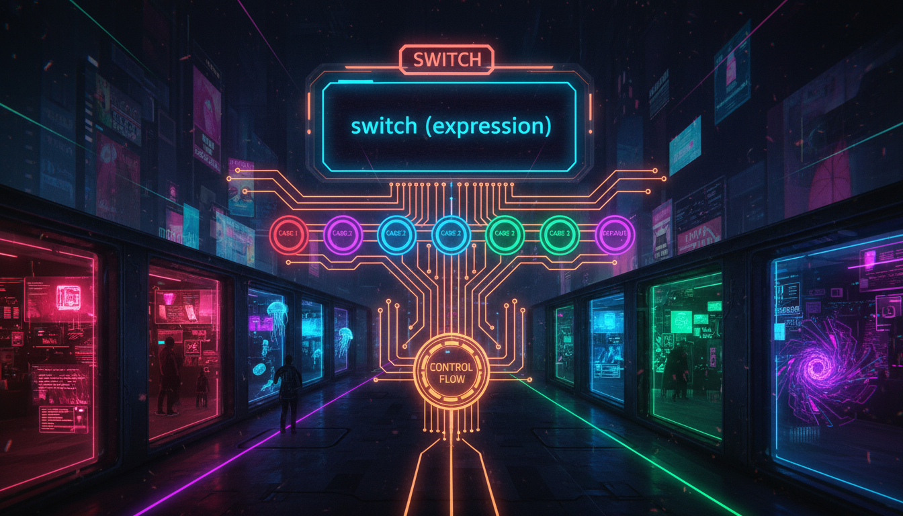

switch-case, break, default, області застосування

Рис. 9.1 — Оператор множинного вибору switch
Оператор switch дозволяє вибрати один із багатьох блоків коду для виконання на основі значення виразу. Він працює з цілими типами, enum та char.
// Синтаксис:
switch (вираз) {
case значення1:
// код для значення1
break;
case значення2:
// код для значення2
break;
default:
// код за замовчуванням
}
// Приклад:
#include <iostream>
int main() {
int day;
std::cout << "Введіть номер дня тижня (1-7): ";
std::cin >> day;
switch (day) {
case 1:
std::cout << "Понеділок" << std::endl;
break;
case 2:
std::cout << "Вівторок" << std::endl;
break;
case 3:
std::cout << "Середа" << std::endl;
break;
case 4:
std::cout << "Четвер" << std::endl;
break;
case 5:
std::cout << "П'ятниця" << std::endl;
break;
case 6:
std::cout << "Субота" << std::endl;
break;
case 7:
std::cout << "Неділя" << std::endl;
break;
default:
std::cout << "Невірний номер дня!" << std::endl;
}
return 0;
}#include <iostream>
int main() {
char grade;
std::cout << "Введіть оцінку (A, B, C, D, F): ";
std::cin >> grade;
switch (grade) {
case 'A':
case 'a':
std::cout << "Відмінно!" << std::endl;
break;
case 'B':
case 'b':
std::cout << "Добре!" << std::endl;
break;
case 'C':
case 'c':
std::cout << "Задовільно" << std::endl;
break;
case 'D':
case 'd':
std::cout << "Потрібно покращити" << std::endl;
break;
case 'F':
case 'f':
std::cout << "Не здано" << std::endl;
break;
default:
std::cout << "Невірна оцінка!" << std::endl;
}
return 0;
}| Критерій | switch | if-else if |
|---|---|---|
| Типи даних | Тільки цілі, char, enum | Будь-які типи |
| Умови | Тільки рівність | Будь-які умови |
| Читабельність | Краще для багатьох варіантів | Універсальніше |
| Продуктивність | Може використовувати jump-таблицю | Послідовна перевірка |
#include <iostream>
enum class Color { RED, GREEN, BLUE, YELLOW };
int main() {
Color c = Color::GREEN;
switch (c) {
case Color::RED:
std::cout << "Червоний" << std::endl;
break;
case Color::GREEN:
std::cout << "Зелений" << std::endl;
break;
case Color::BLUE:
std::cout << "Синій" << std::endl;
break;
case Color::YELLOW:
std::cout << "Жовтий" << std::endl;
break;
}
return 0;
}#include <iostream>
int main() {
int month;
std::cout << "Введіть номер місяця: ";
std::cin >> month;
switch (month) {
case 12:
case 1:
case 2:
std::cout << "Зима" << std::endl;
break;
case 3:
case 4:
case 5:
std::cout << "Весна" << std::endl;
break;
case 6:
case 7:
case 8:
std::cout << "Літо" << std::endl;
break;
case 9:
case 10:
case 11:
std::cout << "Осінь" << std::endl;
break;
default:
std::cout << "Невірний місяць!" << std::endl;
}
return 0;
}